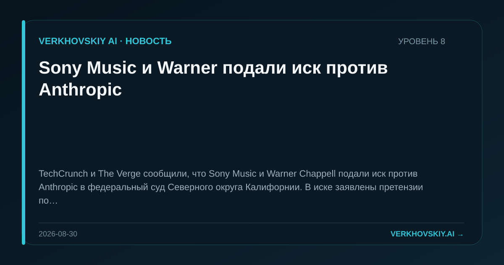

Sony Music и Warner подали иск против Anthropic
TechCrunch и The Verge сообщили, что Sony Music и Warner Chappell подали иск против Anthropic в федеральный суд Северного округа Калифорнии. В иске заявлены претензии по десяткам тысяч защищённых авторским правом произведений и требование компенсаций. Почему это важно: Правовой конфликт вокруг обучающих данных выходит за пределы текстовых издателей и затрагивает музыкальные каталоги. Это повышает стоимость закрытых моделей, если суды начнут закреплять оплату за массивы культурных данных.